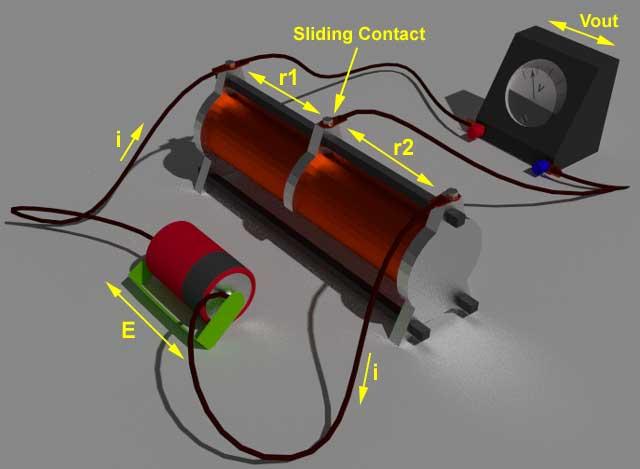

Definition of Voltage Divider
A voltage divider is also known as potential divider. It is a simple electrical circuit that contains a high resistance across a voltage source. We obtain the variable voltage output across the resistance by varying position of sliding contact on the resistance. This output voltage is a fraction of source voltage. Voltage divider rule is applicable for both AC and DC voltage source.
Voltage Divider Rule
Let us consider a circuit where a variable resistor is connected across a voltage source ( Battery ) E Volt. Let's assume, resistance between negative terminal and sliding contact of the variable resistance is r1 and resistance between sliding contact and positive terminal is r2. That means r1 and r2 are in series.
Obviously electric current in this circuit loop is,
Since in series circuit, same electric current flows through the given resistors, voltage drop varies directly with its resistance.

Voltage Divider Example
Let's assume total resistance of a variable resistor is 6 Ω. The sliding contact is positioned at a point where resistance is divided in 2 Ω and 4 Ω. The variable resistor is connected across a 1.5 V battery . Let's examine the voltage appears across the voltmeter connected across 2 Ω section of the variable resistor.
According to voltage divider rule, voltage drops will be,
Uses of Voltage Divider
Voltage divider or potential divider gets used only there where voltage is regulated by dropping specific voltage in a circuit. It mainly gets used in such applications where energy efficiency of the system does not need to be considered seriously.
Potentiometer
The most common application of voltage divider we see in our daily life is potentiometer . For example, the sound adjustment knob attached to our music systems or radio transistors etc is generally a potentiometer . The most basic design of this type of potentiometer has three pins. Two pins are connected to a resistor inside the potentiometer and the third pin is connected with a sliding contact or wiping contact which slides or wipes on the resistor when someone adjusts the knob projected from the potentiometer . The voltage appears across the fixed contacts and sliding/wiping contact according to the voltage divider rule explained above.
Voltage Divider Calculator
Here in the voltage divider calculator below, if we put input voltage at left hand side and put the value of resistances R1 and R2 in the figure below, and click on the button "Calculate", we will get the calculatedx value of output voltage Vout of the voltage divider.
 by
by